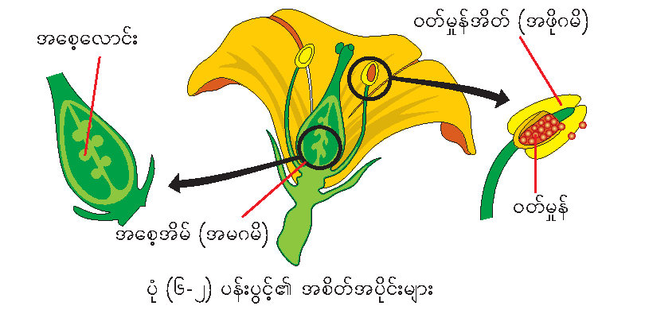
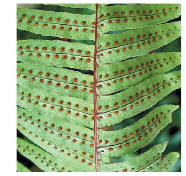
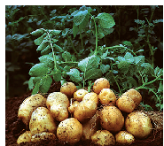
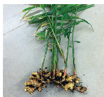
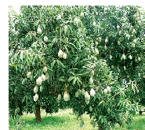
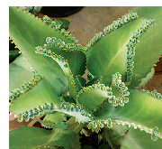
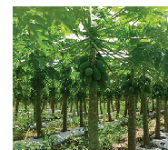

၆-၂ အပင်များ၏ မျိုးပွားခြင်း Reproduction of Plants
အပင်များ၏ မျိုးပွားခြင်းတွင် လိင်ရှိမျိုးပွားခြင်း၊ လိင်မဲ့မျိုးပွားခြင်း နှင့် ပင်ပိုင်းမျိုးပွားခြင်း ဟူ၍ သုံးမျိုးရှိပါသည်။ အရေးကြီးသော စိုက်ပျိုးသီးနှံများနှင့် စီးပွားဖြစ်စိုက်ပျိုးသော သီးနှံပင်တစ်ချို့ကို ပင်ပိုင်းအားဖြင့်လည်း မျိုးပွား၍ရသည်။
၆-၂-၁ လိင်ရှိမျိုးပွားခြင်း — ပုံ (၆-၂) ပန်းပွင့်ဓာတ်ခွဲခန်း
ပန်းပွင့်များသည် အပင်များ၏ မျိုးပွားအင်္ဂါများ ဖြစ်သည်။ ဝတ်မှုန်ကူးခြင်းဖြစ်စဉ်ဖြစ်ပေါ်ပြီးနောက် အဖိုဂမိနှင့် အမဂမိ ပေါင်းစပ်၍ သန္ဓေအောင်ကာ အစေ့များ ဖြစ်လာသည်။
လုပ်ငန်း (၁) နှင့် (၂)
လုပ်ငန်း (၁) — ပေးထားသော ပန်းပွင့်တွင် မည်သည့်အစိတ်အပိုင်းများ ပေါင်းစပ်ပါက အစေ့ဖြစ်လာမည်နည်း။
လုပ်ငန်း (၂) — သင်တို့ပတ်ဝန်းကျင်ရှိ အပင်အမည်များကိုပြောပါ။ ထိုအပင်များအနက် မည်သည့်အပင်များသည် အစေ့မှပေါက်သနည်း။
အစေ့အိမ် (Ovary) — အမဂမိ
ပန်းပွင့်၏ အလယ်ဗဟိုအောက်ခြေတွင် တည်ရှိသော အစေ့အိမ်ထဲ၌ အမဂမိ (Female gamete) ပါရှိသည်။ သန္ဓေအောင်ပြီးနောက် အသီးအဖြစ် ဖွံ့ဖြိုးလာသည်။

ဖတ်စာအုပ် မူရင်း ပုံ (၆-၂) ပန်းပွင့်၏ အစိတ်အပိုင်းများ (စာမျက်နှာ ၅၄)
၆-၂-၂ အပင်များတွင် လိင်မဲ့မျိုးပွားခြင်း (စပိုးများ)
အဖိုဂမိနှင့် အမဂမိများ ပေါင်းစပ်ပါဝင်ခြင်းမရှိဘဲ မျိုးဝတ်မှုန်ခေါ် စပိုး (Spores) များနှင့် မျိုးပွားခြင်း

ဖတ်စာအုပ် မူရင်း ပုံ (၆-၃) ဖန်းပင် (Fern)
ဖန်းပင် (Fern) နှင့် မော့စ်ပင် (Moss)
တစ်ချို့သော အပင်များသည် မျိုးဝတ်မှုန်ခေါ် စပိုး (Spore) များနှင့် မျိုးပွားကြသည်။ ထိုအပင်များတွင် အဖိုဂမိနှင့် အမဂမိများ ပေါင်းစပ်ပါဝင်ခြင်းမရှိပါသဖြင့် လိင်မဲ့မျိုးပွားပင်များ ဟုခေါ်သည်။
ဖန်းပင်သည် မည်ကဲ့သို့ အပင်သစ် ဖြစ်ပေါ်လာသနည်း။
၆-၂-၃ ပင်ပိုင်းမျိုးပွားခြင်း — လှန်ကြည့်ကတ်များ
အမြစ်၊ အရွက်၊ အကိုင်း၊ မြေအောက်ပင်စည်သည် ပင်ပိုင်းအင်္ဂါများ (vegetative organs) ဖြစ်သည်။ ကတ်တစ်ခုချင်းစီကို နှိပ်၍ ဖတ်ရှုပါ။
ရွက်လှပင် (Croton)
နှိပ်၍ နောက်ကျောဖက် ဖတ်ရှုပါ ↻
ရွက်လှပင်
အကိုင်း (Stem cutting) ကို ဖြတ်၍ စိုက်ပျိုးခြင်းဖြင့် အမြစ်ထွက်ကာ အပင်သစ်ကြီးထွားလာသည်။
ပြန်လှန်ရန် နှိပ်ပါ ↺ကြံပင် (Sugarcane)
နှိပ်၍ နောက်ကျောဖက် ဖတ်ရှုပါ ↻
ကြံပင်
ကြံပင်စည်အဆစ်များ ပါဝင်သော ပင်စည်ပိုင်းကို မြေကြီး၌ စိုက်ပျိုး၍ အပင်သစ်များ မျိုးပွားသည်။
ပြန်လှန်ရန် နှိပ်ပါ ↺နှင်းဆီပင် (Rose)
နှိပ်၍ နောက်ကျောဖက် ဖတ်ရှုပါ ↻
နှင်းဆီပင်
နှင်းဆီကိုင်းဖြတ်စိုက်ခြင်းဖြင့် မိခင်အပင်နှင့်တူသော ပန်းပင်သစ် ရရှိသည်။
ပြန်လှန်ရန် နှိပ်ပါ ↺ပုဏ္ဏရိပ်ပင် (Ixora)
နှိပ်၍ နောက်ကျောဖက် ဖတ်ရှုပါ ↻
ပုဏ္ဏရိပ်ပင်
အကိုင်းဖြတ်စိုက်ခြင်းနှင့် မြေထုပ်စည်းခြင်းတို့ဖြင့် လွယ်ကူစွာ မျိုးပွားနိုင်သည်။
ပြန်လှန်ရန် နှိပ်ပါ ↺မြက်ပင်နှင့် မြင်းခွာရွက်ပင်
အမြစ်တွယ်ပြီး တွားသွားနေသော မြက် သို့မဟုတ် မြင်းခွာရွက်ပင်တို့သည် မည်ကဲ့သို့ အပင်သစ်များ ဖြစ်ပေါ်လာသနည်း။ ထိုအပင်များကို အဘယ်ကြောင့် တွားသွားပင်ဟုခေါ်သနည်း။
အဖြေ — မိမိတို့၏ ပင်စည်ပိုင်းကို ရှည်လျားစေပြီး မြေကြီး၌ အမြစ်တွယ်စေခြင်းအားဖြင့် ပင်ပိုင်းမျိုးပွားခြင်းကို ဖြစ်စေသောကြောင့် တွားသွားပင်ဟုခေါ်သည်။ (ဥပမာ - မြက်ပင်၊ မြင်းခွာရွက်ပင်၊ စတော်ဘယ်ရီ)
အဓိကအချက်များ (စာမျက်နှာ ၅၅)
- အပင်များ၏ မျိုးပွားခြင်းတွင် လိင်ရှိမျိုးပွားခြင်း၊ လိင်မဲ့မျိုးပွားခြင်းနှင့် ပင်ပိုင်းမျိုးပွားခြင်းဟူ၍ ၃ မျိုးရှိပါသည်။
- လိင်ရှိမျိုးပွားခြင်းမှာ ပန်းပွင့်များ၏ ဝတ်မှုန်အိတ်ရှိ အဖိုဂမိနှင့် အစေ့အိမ်ရှိ အမဂမိတို့ ပေါင်းစပ်၍ သန္ဓေအောင်ပြီး အစေ့ဖြစ်လာကာ အစေ့မှ အပင်သစ်ပေါက်လာခြင်း ဖြစ်သည်။ ဥပမာ - သရက်ပင်၊ သင်္ဘောပင်၊ ပဲပင်အမျိုးမျိုး။
- လိင်မဲ့မျိုးပွားခြင်းတွင် တစ်ချို့သောအပင်များသည် အဖိုဂမိနှင့် အမဂမိတို့မပါဝင်ဘဲ စပိုးများမှ အပင်သစ်ပေါက်လာခြင်းဖြစ်သည်။ ဥပမာ - ဖန်းပင်၊ မော့စ်ပင်။
- ပင်ပိုင်းမျိုးပွားခြင်းမှာ အပင်၏အစေ့မှမဟုတ်ဘဲ အခြားသောအစိတ်အပိုင်းများ (အကိုင်း၊ ပင်စည်၊ အရွက်) မှ အပင်သစ်များ ရရှိသည်။ ဥပမာ - မြက်ပင်၊ မြင်းခွာရွက်ပင်၊ စတော်ဘယ်ရီ။
လေ့ကျင့်ခန်းများ
စာမျက်နှာ (၅၆) ရှိ မေးခွန်း (၁) မှ (၄) အထိ အားလုံးကို ဖတ်ရှုဖြေဆိုပါ။
၁။ သင်သိသော လိင်မဲ့မျိုးပွားခြင်းဖြင့် မျိုးပွားသည့်အပင်များကို ဖော်ပြပါ။
ပင်ပိုင်းနည်းဖြင့် မျိုးပွားသောအပင်များ — အာလူးပင်၊ ချင်းပင်၊ ကြံပင်၊ ရွက်ကျပင်ပေါက်ပင်၊ ဝါးပင်၊ နှင်းဆီပင်
၂။ မိမိဒေသတွင်ရနိုင်သော အပင်၏ ပင်ပိုင်းအစိတ်အပိုင်း (အာလူး၊ ကြက်သွန်နီ၊ ချင်း) တစ်မျိုးမျိုးကို အသုံးပြုပြီး အပင်ပေါက်လာသည်အထိ လက်တွေ့လုပ်ဆောင်ကြည့်ပါ။
၃။ သင်သိသော အစေ့ဖြင့် မျိုးပွားသည့်အပင် ၅ မျိုးကိုဖော်ပြပါ။
၄။ အောက်ပါအပင်များကိုလေ့လာပြီး ယင်းတို့၏မျိုးပွားခြင်းအမျိုးအစားကို ဖြေဆိုပါ။




